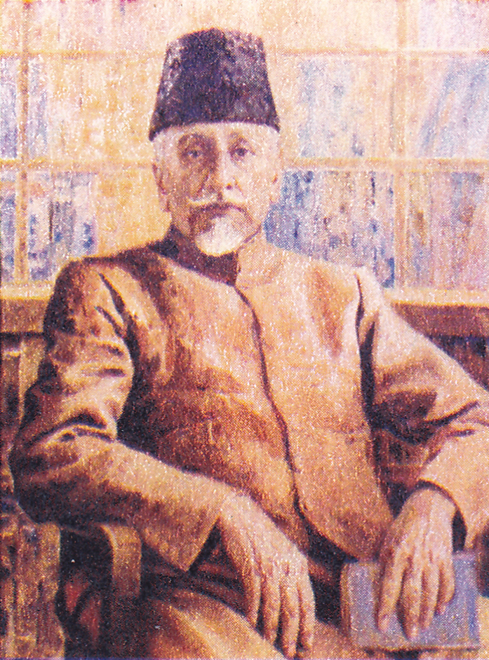

CONTACT
Address: Link Road Number 3, Near Kali Mata Mandir, Bhopal, Madhya Pradesh, India 462003
Email : pro[at]manit[dot]ac[dot]in
Telephone: +91 755 4051000, 4052000
Fax: +91-755 2670562
Web: www.manit.ac.in
Maulana Azad National Institute of Technology Bhopal (MANIT or NIT Bhopal, NIT-B) is a public technical university located in Bhopal, Madhya Pradesh, India. It is part of a group of publicly funded institutions in India known as National Institutes of Technology. It is named after the Independent India's first Minister of Education (India), scholar and independence activist Abul Kalam Azad who is commonly remembered as Maulana Azad.
Established in the year 1960 as Maulana Azad College of Technology (MACT) or Regional Engineering College (REC), Bhopal, it became a National Institute of Technology in 2002 and was recognised as an Institute of National Importance under the NIT Act in 2007. The institute is fully funded by Ministry of Education, Government of India and is governed by the NIT Council.
MANIT was started in 1960 as Maulana Azad College of Technology (MACT), named after the first Minister of Education of India, Maulana Abul Kalam Azad. MACT started functioning in 1960 at Govt S.V. Polytechnic with an intake of 120 students and seven faculty members. It was one of the first out of eight Regional Engineering Colleges started during the second five-year plan (1956-1960) in India, where the main focus was development of the public sector and rapid industrialisation.
To ensure enough supply of trained personnel to meet the demand of rapid industrialisation, a decision was taken to start the Regional Engineering Colleges (RECs), one in each major state of India to churn out graduates with good engineering merit. Thus a total of seventeen RECs were established 1959 onwards, one in each major state of India. Each college was a joint and cooperative enterprise of the central government and the concerned state government. MACT was one of the first eight REC's to be established in each region in India. It was established in the Western Region along with Visvesvaraya National Institute of Technology, Nagpur and Sardar Vallabhbhai National Institute of Technology, Surat.
It started operating in the premises of "Swami Vivekananda Polytechnic" Bhopal. Mr. S. R. Beedkar, Principal of Swami Vivekananda Polytechnic was appointed as the planning officer of the institute. The foundation stone of the Institute building was laid by the then Prime Minister of India Pandit Jawaharlal Nehru on 23 April 1961. The Institute gradually progressed to become a high level education center with steady development of infrastructure as well as academics. J. N. Moudgill became the first principal of MACT in 1962. Five years degree programs in Civil Engineering, Mechanical Engineering and Electrical Engineering were started in 1962 itself. In 1963, the five-year program of Bachelor of Architecture was started as well. In 1964, the institute was shifted to its own building which is its present campus. As the necessity of science and technology kept on growing, more undergraduate programs kept on getting added like: Electronics and Communications Engineering in 1972; Computer Science and Engineering in 1986; 3-year Master of Computer Applications (MCA) in 1988 and Information Technology in 2001 (which was later merged with "Computer Science and Engineering" in 2013).
The success of technology-based industry led to high demand for technical and scientific education. During the Premiership of Atal Bihari Vajpayee, the then Minister of Human Resource Development, Murli Manohar Joshi decided to upgrade all "Regional Engineering Colleges" to "National Institutes of Technology" that shall be funded by the Central Government itself. Hence, in 2002, all REC's became NIT's and MACT became Maulana Azad National Institute of Technology (MANIT). In the same year, MANIT was granted deemed university status. With this advancement, the World Bank assisted "Technical Education Quality Improvement Program" started in 2003, for the rapid academic and infrastructural growth of the college. In addition to engineering programs, an MBA program as well commenced from 2006. The Government of India in 2007 passed the NIT Act as per which MANIT was declared an Institute of National Importance.
MANIT is spread over 650 acres (260 ha) which makes it one of the largest NITs in India in terms of total campus area. The entire campus consists of administrative and academic buildings, workshops, library and community centers, residential accommodations for students and staff and other general amenities such as Post Office, a Bank with ATM, Shopping complex, a School for children, medical care unit, an auditorium with the capacity of 1000 persons and sports complex with vast expand of open area. An official branch of the State Bank of India also operates from the main campus. The campus is divided into four sectors. These sectors have the following facilities/features:
Admission to undergraduate courses is through the national level engineering entrance examination – through the Joint Entrance Examination - Main. The selection is very tough as only top 5% of the applicant are able to secure admissions. Prior to the start of JEE Main, admission to MANIT was through the All India Engineering Entrance Examination (AIEEE) until 2013.
For NRI's and foreign nationals, the admission is conducted through DASA (Direct Admissions for Students Abroad) where a qualifying score of the SAT Subject Test in Physics, Chemistry and Mathematics is required. Other than DASA, scholarships programs for admission are provided through the Indian Council for Cultural Relations. Students from different countries such as Afghanistan, Bangladesh, Bhutan, Nepal, Sri Lanka, Kuwait, Saudi Arabia, Qatar, Oman, UAE etc. take admission into the institute every year.
Students for postgraduate programs are selected through Graduate Aptitude Test in Engineering for the M.Tech. program and through NIT MCA Common Entrance Test for the MCA program. Admission to the MBA program is through the Common Admission Test.
MANIT is ranked 70th among the engineering colleges of India by National Institutional Ranking Framework (NIRF) in 2022
Address: Link Road Number 3, Near Kali Mata Mandir, Bhopal, Madhya Pradesh, India 462003
Email : pro[at]manit[dot]ac[dot]in
Telephone: +91 755 4051000, 4052000
Fax: +91-755 2670562
Web: www.manit.ac.in